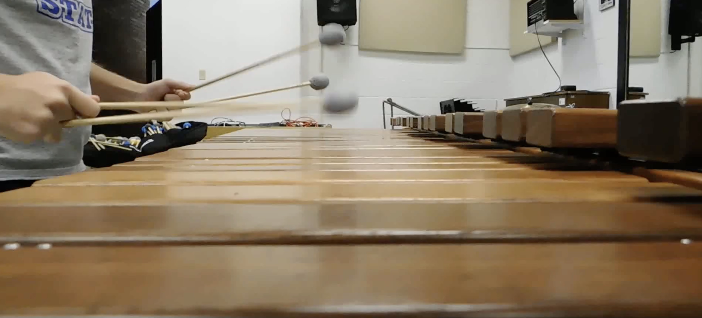

One of the major western persuccion instrument groups is the family known as pitched or keyboard, or malle, etc instruments. The main ones played in percussion ensemble settings are marimbas, vibraphones, glockenspiels, and xylophones. There is an extensive solo and ensemble repetoire for all of them and all provide great listening. Sometimes, mallet player (particularly on marimba and vibrahpone) use four mallets at the same time! You can see an example of this in the photo to the left. There are two main four-mallet grips: Stevens and Burton. Stevens is what is shown to the left, with the mallets held at the very ends, and Burton has the mallets gripped farther up in a cross-stick grip. Burton Grip is used more for jazz vibraphone playing, and Steves grip is more common in marimba playing. There is an exception in that many Japanese marimbists will play in Burton Grip. The world of mallet percussion is veried and vibrant!